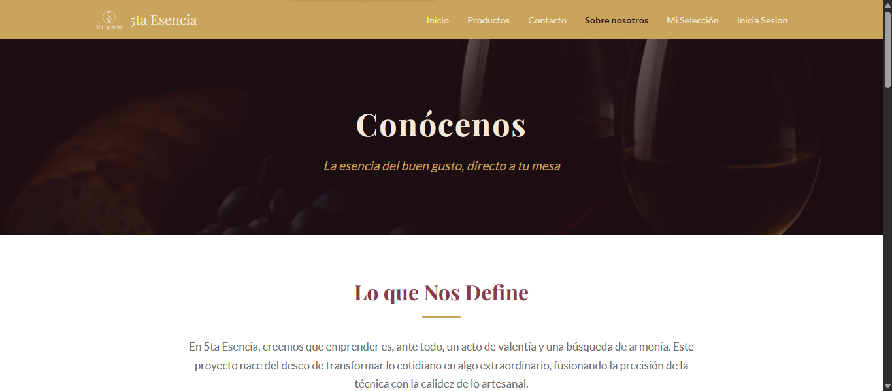
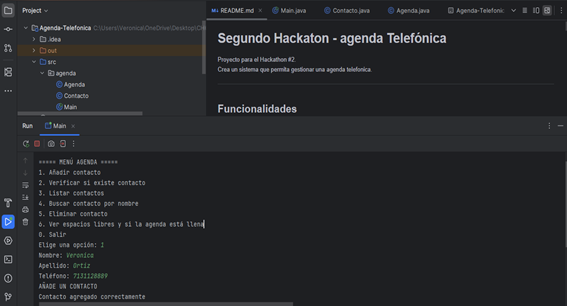

Proyectos



Desarrolladora web enfocada en crear experiencias modernas, funcionales y centradas en el usuario.


Estructura semántica
Diseño responsive
Interactividad web
Gestión de bases de datos
Desarrollo backend y lógica del servidor
Repositorios y colaboración
Control de versiones en terminal
Soy desarrolladora Full Stack Jr. con enfoque en frontend, especializada en HTML, CSS y JavaScript. Me apasiona crear interfaces modernas, funcionales y centradas en el usuario.
Me formé en Generation México como desarrolladora Java Full Stack, donde trabajé en proyectos colaborativos integrando frontend y backend.
Tengo experiencia trabajando con Git, GitHub y metodologías ágiles como Scrum, desarrollando soluciones eficientes en equipo.
Interfaces modernas
Integración completa
Trabajo en equipo